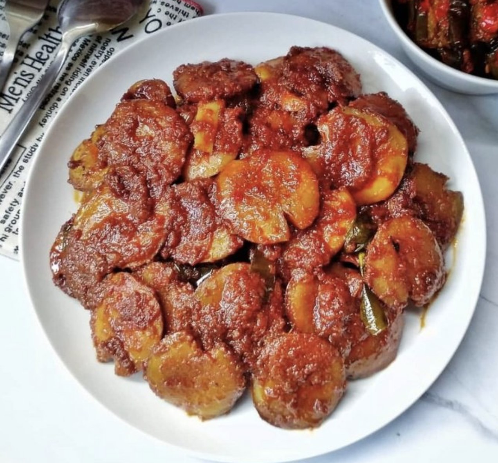

Bahan bahan
- 250 gram jengkol tua yang sudah direbus, pipihkan
- 700 ml santan cair
- 1 batang sereh memarkan
- 4 lembar daun salam
- 4 lembar daun jeruk sobek-sobek
- garam, kaldu jamur, merica bubuk dan sedikit gula pasir/gula merah
Bumbu
- Sedikit jahe, kunyit dan lengkuas
- 8 butir bawang merah
- 4 siung bawang putih
- 4 butir kemiri
- 1 sdt ketumbar
Cara Pembuatan
- Tumis bumbu halus sampai wangi, masukkan sereh, salam dan daun jeruk tumis lagi agak lama sampai bumbu benar-benar matang dan mengeluarkan minyak
- Masukkan santan dan jengkol, didihkan. Bumbui garam, kaldu jamur, merica dan gula sesuai selera
- Masak sampai bumbu meresap dan kuah santan menyusut. Jangan lupa cek rasa, angkat sajikan dengan nasi hangat